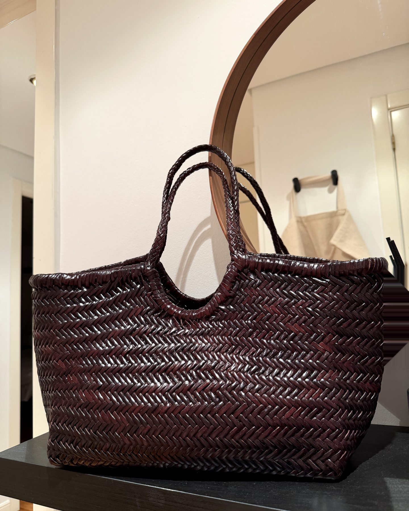

The Bag That Carries
Summer into Fall

Every summer bag comes with a hidden expiration date. You know the one — the raffia tote, the straw basket, the crocheted thing that looks perfect against a linen dress and then, sometime around the first cool morning of September, suddenly looks like it missed its flight home. We buy them anyway, every June, and retire them every fall. It's the most predictable purchase in fashion.
This one broke the pattern. I found it in Zua's shop the way the best things are found — not looking for a bag at all. It has everything I want from a summer carry-all: the open woven texture, the easy over-the-shoulder slouch, room for a day that doesn't go to plan. But it's braided from leather, not straw — and the color is pure autumn. Chocolate, deep and glossy, the shade of every good boot and belt you'll reach for in October. Summer's favorite texture in fall's favorite color. It refuses to pick a season, which is exactly why it earns a place in all of them.
Summer texture, autumn color
There's a quiet rule hiding in this bag, and it's worth stealing: when a piece belongs to one season by its material, let its color belong to the next one. A woven bag in chocolate. A linen blazer in charcoal. A knit in ivory rather than forest green. Cross the signals and the piece stops being seasonal at all — it just becomes yours, twelve months a year. That's the same arithmetic behind cost-per-wear: a bag you carry from June to November doesn't have to justify itself the way a six-week fling does.
And like the palm-print dress that started this Madrid summer, it restyled what I already own. The chocolate picks up every tan sandal I have now, and it's already flirting with the suede jacket that comes out when the evenings turn.
The bag in question
Mine is the Matilde in chocolate by Zua, a small Spanish label whose bags are braided by hand — you can see it in the herringbone weave, tight and glossy and slightly irregular in the way only handwork is. The interior is genuinely roomy (this is a real day bag, not a decorative basket), the braided handles are integrated into the body, and it holds its structure without stiffness. Handmade, and priced like the years it will last rather than the weeks a straw bag survives. If chocolate isn't your neutral, the Matilde comes in other shades — but I'd argue the chocolate is the whole point.
New piece, meet everything you own
Bring a new find into Atelier Daily and the stylist builds complete looks around it — from the closet you already have.
Get Atelier Daily